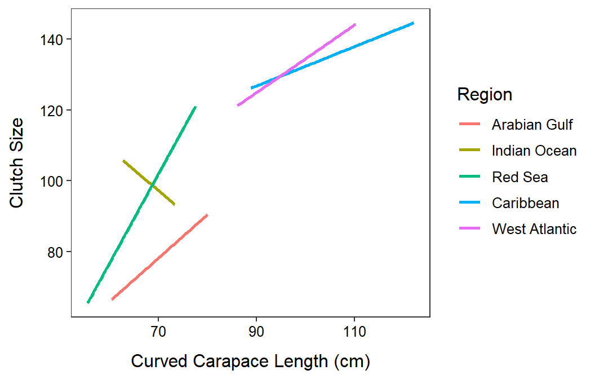
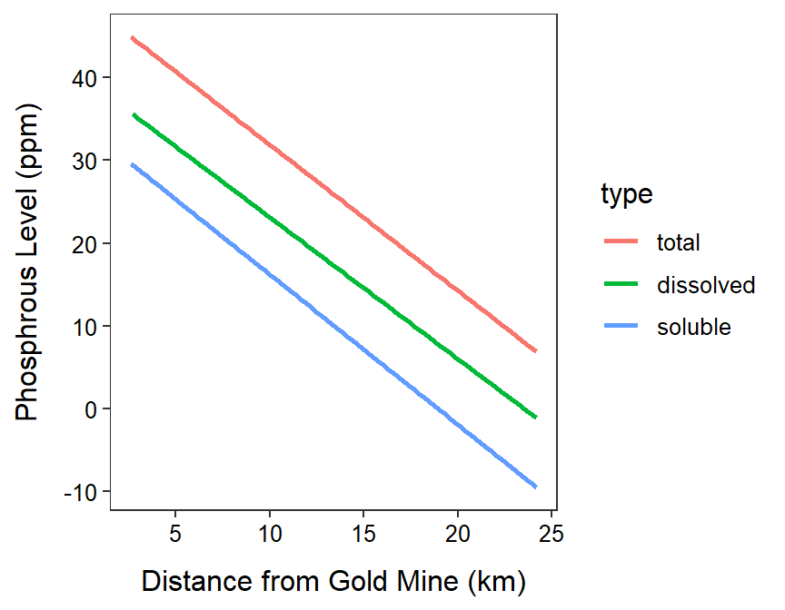

ht <- read.csv("https://raw.githubusercontent.com/droglenc/NCData/master/HawksbillTurtles.csv")
ht$Region <- factor(ht$Region,
levels=c("Arabian Gulf","Indian Ocean","Red Sea",
"Caribbean","West Atlantic"))
ivr.ht <- lm(Clutch.Size~CCL+Region+CCL:Region,data=ht)
anova(ivr.ht)Analysis of Variance Table
Response: Clutch.Size
Df Sum Sq Mean Sq F value Pr(>F)
CCL 1 246757 246757 526.8775 < 2.2e-16
Region 4 22045 5511 11.7675 5.266e-09
CCL:Region 4 3461 865 1.8472 0.1192
Residuals 368 172349 468 ggplot(data=ht,mapping=aes(x=CCL,y=Clutch.Size,color=Region)) +
labs(x="Curved Carapace Length (cm)",y="Clutch Size") +
theme_NCStats() +
geom_smooth(method="lm",se=FALSE)`geom_smooth()` using formula 'y ~ x'Warning: Removed 140 rows containing non-finite values (stat_smooth).
Analysis of Variance Table
Response: phosp
Df Sum Sq Mean Sq F value Pr(>F)
distance 1 8863.5 8863.5 48.0590 1.763e-09
type 2 3135.0 1567.5 8.4992 0.0005016
distance:type 2 5.0 2.5 0.0137 0.9864185
Residuals 69 12725.7 184.4 gm <- read.csv("http://derekogle.com/NCMTH207/modules/ce/data/GoldMine.csv")
gm$type <- factor(gm$type,levels=c("total","dissolved","soluble"))
ivr.gm <- lm(phosp~distance+type+distance:type,data=gm)
anova(ivr.gm)Analysis of Variance Table
Response: phosp
Df Sum Sq Mean Sq F value Pr(>F)
distance 1 8863.5 8863.5 48.0590 1.763e-09
type 2 3135.0 1567.5 8.4992 0.0005016
distance:type 2 5.0 2.5 0.0137 0.9864185
Residuals 69 12725.7 184.4 ggplot(data=gm,mapping=aes(x=distance,y=phosp,color=type)) +
labs(x="Distance from Gold Mine (km)",y="Phosphrous Level (ppm)") +
theme_NCStats() +
geom_smooth(method="lm",se=FALSE)`geom_smooth()` using formula 'y ~ x'